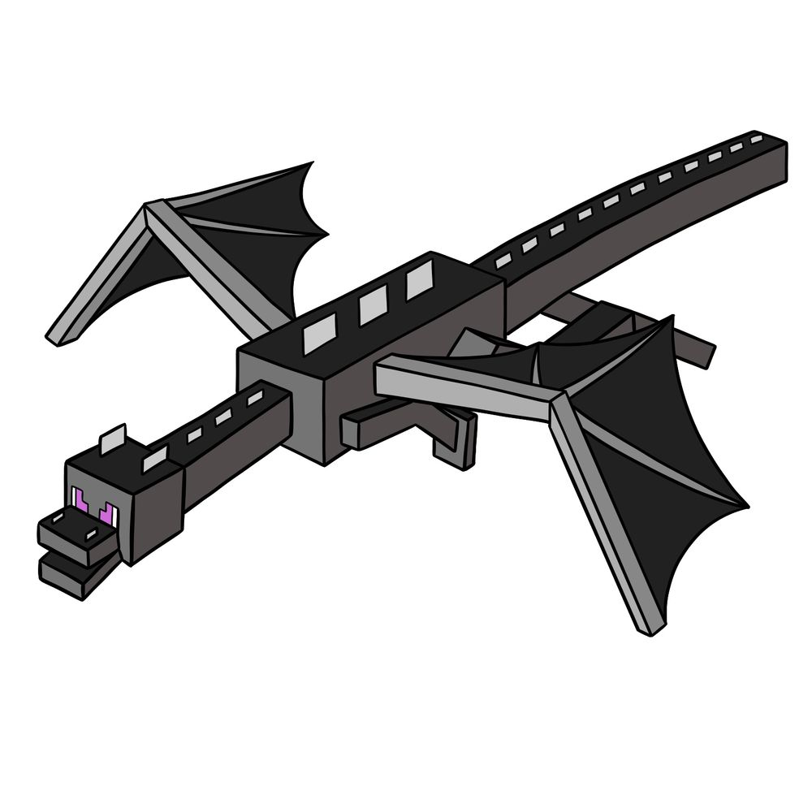
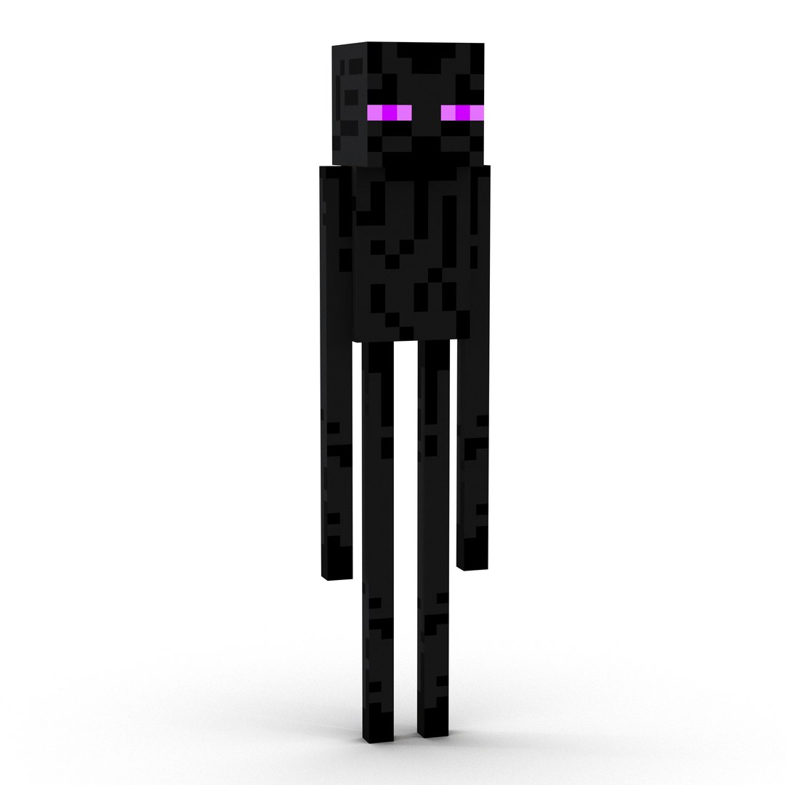
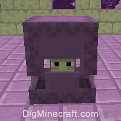
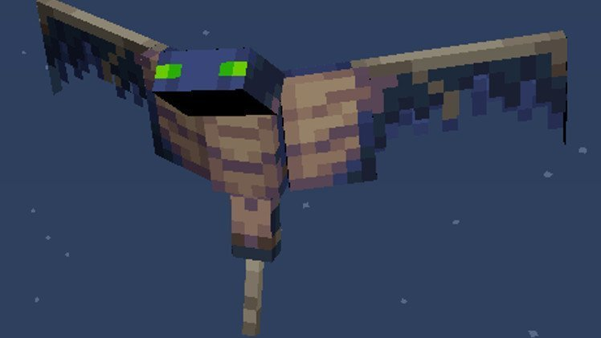
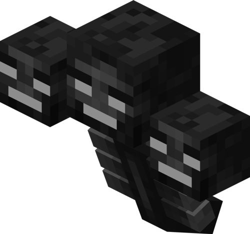

Sobre o The End:
O End é a última dimensão do Minecraft, cheia de mistérios, perigos e prêmios incríveis. Desde o indescritível dragão ender até a rara pedra do End, esse reino coloca as habilidades dos jogadores à prova.
Mobs mais comuns no mundo Over World:
| Mobs | Nível de Dificuldade |
|---|---|
| Ender Dragon | Alta dificuldade |
| Enderman | Média dificuldade |
| Shulker | Média dificuldade |
| Wither | Média dificuldade |
Mobs no Over World:
❮
❯

Chefe final, grande desafio

Evitável, mas perigoso em grupos

Causa levitação, complica quedas

(Não nativo, mas relevante)

Extremamente perigoso
Dicas para este mundo:
- Leve muitas Ender Pearls — úteis para escapar de quedas ou se teleportar com segurança.
- Use elytra e fogos de artifício para explorar as ilhas do End com facilidade.
- Não olhe diretamente para os Endermen — leve abóbora na cabeça se quiser segurança extra.
- Construa uma base segura em volta do portal do End para se proteger ao chegar.
- Leve baldes de água (ou neve em mundos hardcore) para se defender de empurrões e quedas.